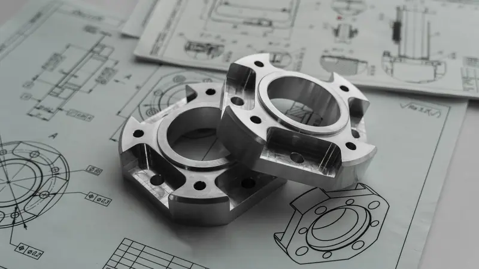

Профиль по вашему чертежу
Когда нужного сечения нет в каталоге, делаем свою матрицу и прессуем профиль под ваше изделие: раму, радиатор, направляющую, корпус. Матрица остаётся за вами — повторные партии без доплаты за оснастку.
Как проходит заказ
От чертежа до серии — 3 недели
- ЧертёжDWG, DXF, STEP или PDF с размерами сечения. Подойдёт и эскиз от руки с размерами.день 1
- ТехнологПроверит, прессуется ли сечение, предложит правки — например, утолщить стенку до 1,2 мм.1 рабочий день
- МатрицаИзготавливаем оснастку из инструментальной стали 4Х5МФС.9–12 рабочих дней
- ПробаОтправляем 3 метра на проверку с протоколом замеров. Подходит — запускаем серию.2 дня
- СерияПрессуем, режем в размер, старим до Т1 или Т6, упаковываем.3–5 рабочих дней
Что можем отпрессовать
Технические границы
Если ваше сечение выходит за эти рамки, всё равно пришлите — технолог скажет, как его упростить или разбить на два профиля.
| Габарит сечения | вписывается в круг Ø 180 мм |
|---|---|
| Толщина стенки | от 1,0 мм для открытых профилей, от 1,2 мм для замкнутых |
| Сплавы | АД31 и 6063 (6060), по запросу 6082 |
| Состояние | Т1 или Т6 — старение в своей печи |
| Допуски | по ГОСТ 22233-2018, повышенная точность — по согласованию |
| Длина | хлыст до 7 м или мерные отрезки от 50 мм |
| Покрытие | анодирование 15–20 мкм, серебро или бронза |
Предварительная оценка
Сколько будет весить и стоить партия
Площадь сечения есть в любой CAD-программе: в КОМПАС — «Масс-центровочные характеристики», в AutoCAD — команда MASSPROP. Это ориентир: точную цену технолог посчитает по чертежу.
Отправить чертёж
Технолог ответит за 1 рабочий день
Андрей Викторович, ведущий технолог, посмотрит сечение и пришлёт расчёт: стоимость матрицы, цену за килограмм и сроки. Если сечение нужно поправить — позвонит и объяснит, что именно.